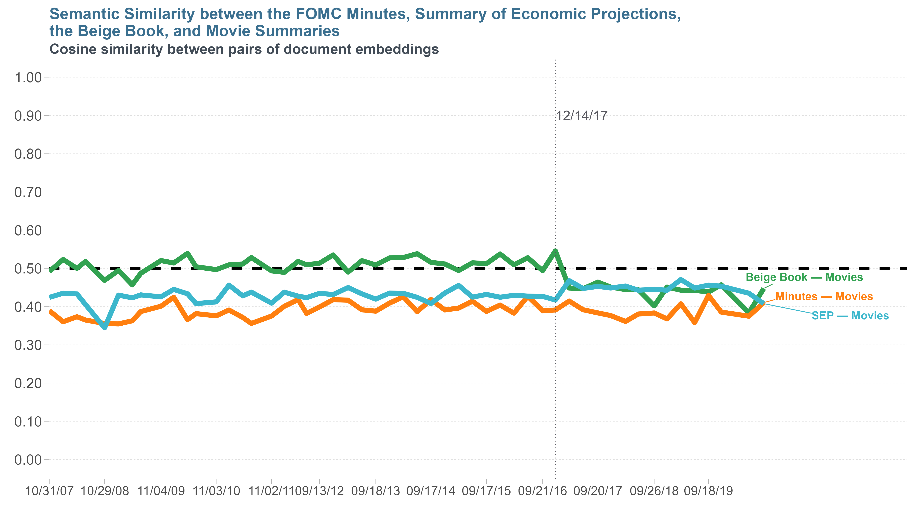

Fed Communications
Rubén Hernández Murillo
Model Risk
KeyBank — October, 2022
This talk
- Presentation website: rubenhm.org/talks/fedcomms
- Slides repository: github.com/rubenhm/fedcomms
- Project repository: github.com/rubenhm/text-similarities
Part I:
Fed Communications
Motivation
The Fed produces a lot of communications:
- Monetary policy
- Banking supervision and regulation
- Financial stability
- Payments systems
- Economic research
Monetary Policy Communications
- FOMC post-meeting statement
- Post-meeting press conference
- Semiannual Report to Congress by Fed Chair
- Minutes of the FOMC meeting
- Summary of Economic Projections (SEP)
- Congressional testimony by Fed governors
- Speeches by Fed governors
Other Fed Communications
- The Beige Book
- Speeches by regional bank presidents
https://www.stlouisfed.org/fomcspeak
SEP: The Dotplot
SEP: PCE Inflation
FOMC Communications
- FOMC communications are drafted strategically
- The Fed takes into account market reactions
- Tension between:
- promoting transparency
- minimizing disruptions
- Goals:
- To be ’N-sync with the markets
(conveying that policies are data-driven)
- To be ’N-sync with the markets
Fed Communications
Chairman Bernanke on Federal Reserve Communications
If market participants understand that
arriving information about the economy
increases the likelihood of certain policy actions,
then market interest rates will tend to move
in a way that reinforces the expected actions,
effectively supporting the goals of the central bank.— Ben S. Bernanke
November 14, 2007
Part II:
Numerical Exercise
Exercise
- Calculate measures of semantic similarity between:
- the discussion on current conditions and the outlook
reported in the Minutes and - the discussion on the forecasts
reported in the Summary of Economic Projections.
- the discussion on current conditions and the outlook
- The similarity measures provide a notion of the
correlation of ideas across the two documents
Minutes and SEP
Robustness tests
- Compare with the Beige Book
- Compare with movie reviews
Strategy
- Use sentence embeddings of the documents
- SentenceTransformers
(Reimers and Gurevych 2019) - PyTorch with CUDA support
- SentenceTransformers
- Embedding
- Mapping of sentences to high-dimensional vectors
in an inner product space
- Mapping of sentences to high-dimensional vectors
Measures of similarity
- Cosine similarity
- Euclidean distance
- Pearson correlation
Cosine similarity
Measure of similarity between two vectors, \(A\) and \(B\)
\(\mathrm{cosine~similarity}~(A,B) = cos(\theta) = \frac{A \cdot B}{\lVert A \rVert \lVert B \rVert}\)
Measure ranges from \(-1\) to \(1\) \[\begin{align*} {\scriptsize\bullet}~ A &\perp B &\implies cos(\theta) &= 0 &\\ {\scriptsize\bullet}~ B &= c A \mathrm{, with~} c>0 &\implies cos(\theta) &= 1 &\\ {\scriptsize\bullet}~ B &= c A \mathrm{, with~} c<0 &\implies cos(\theta) &=-1 &\\ \end{align*}\]
Multiple tools and languages


Code dependencies
Download data (R)
- FOMC Minutes and SEP available as
PDFfiles - Beige Book reports available as
HTMLfiles - Movie reviews available from the NYT API as
JSONfiles
Download Movie Reviews (R)
# Download movie/book reviews from the nytimes API
library(jsonlite)
library(dplyr)
library(tibble)
library(tidytext)
library(reticulate)
# Select python environment
use_condaenv('gcloud')
# Load New York Times API key
nyt_key = Sys.getenv('NYT_KEY')
# Dates of Minutes with SEPS
dates.seps <- c('20071031',
'20080130',
'20080430',
'20080625',
'20081029',
'20090128',
'20090429',
'20090624',
'20091104',
'20100127',
'20100428',
'20100623',
'20101103',
'20110126',
'20110427',
'20110622',
'20111102',
'20120125',
'20120425',
'20120620',
'20120913',
'20121212',
'20130320',
'20130619',
'20130918',
'20131218',
'20140319',
'20140618',
'20140917',
'20141217',
'20150318',
'20150617',
'20150917',
'20151216',
'20160316',
'20160615',
'20160921',
'20161214',
'20170315',
'20170614',
'20170920',
'20171213',
'20180321',
'20180613',
'20180926',
'20181219',
'20190320',
'20190619',
'20190918',
'20191211',
'20200610',
'20200916') %>% as.Date(format = '%Y%m%d')
# Test API
# https://www.storybench.org/working-with-the-new-york-times-api-in-r/
download_movies <- function(date_sep) {
# Download titles and summaries of movies that opened on the SEP date
link <- paste0("https://api.nytimes.com/svc/movies/v2/reviews/search.json?opening-date=",
date_sep,"&api-key=",nyt_key)
# Call the API
x <- fromJSON(link)
# Define the dataframe with sentences
dt <- x$results %>% select(display_title, summary_short)
dt$doc_id <- format(date_sep, "%Y%m%d")
dt <- dt %>%
mutate(movie = paste0(display_title, '. ', summary_short)) %>%
select(doc_id, movie)
return(dt)
}
# Download data for all SEP dates
movies <- lapply(dates.seps, function(x) {
#browser()
# https://stackoverflow.com/questions/12193779/how-to-write-trycatch-in-r
response = tryCatch({
message(paste0("Now attempting API call for date= ", x))
dt = download_movies(x)
},
warning = function(w) {
message(paste0('Warning downloading date=', x))
message('Here is the original warning:')
message(w)
return(NULL)
},
error = function(e) {
message(paste0('Error downloading date=', x))
message('Here is the original error:')
message(e)
return(NULL)
},
finally = {
message('Processed API call for date=', x, '...')
}
)
# Wait 6 seconds before next API call
# to avoid the 10 requests per minute limit
Sys.sleep(6)
return(response)
})
# Check if we hit the requests-per-minute limit
assertthat::assert_that(!any(unlist(lapply(movies, is.null))))
# Prepare data for analysis -----------------------------------------------
movies <- movies %>% bind_rows()
# # Tokenize into sentences, then into words, then remove stop words
data("stop_words")
tidy_movies <- movies %>%
select(doc_id, movie) %>%
# Replace line feeds, newline characters
mutate(movie = sub(pattern = '\\r\\n', replacement = ' ', x = movie)) %>%
unnest_tokens(token = "sentences", input = movie, output = sentence) %>%
group_by(doc_id) %>%
mutate( sentence_id = row_number()) %>%
unnest_tokens(token = "words", input = sentence, output = word) %>%
ungroup() %>%
anti_join(stop_words)
# Remove numbers
tidy_movies <- tidy_movies %>%
filter(!grepl(pattern = '^[0-9\\.+\\-]+$', x = word) )
# Join back into sentences
sent_movies <- tidy_movies %>%
group_by(doc_id, sentence_id) %>%
summarise(text = paste0(word, collapse = " ") ) %>%
ungroup()
# Write to pickle file for python
py_save_object(sent_movies, filename = 'data/data-gen/sent_movies.p')
Download Minutes and SEP (R)
# Download FOMC documents
library(httr)
library(xml2)
library(rvest)
library(magrittr)
# Function to download file from the web
FileDown <- function(url, slug, file, folder){
#browser()
url_ = url
slug_ = slug
file_ = file
folder_ = folder
resp <- httr::GET(url = url_,
path = file.path(slug_, file_),
config = httr::config(ssl_verifypeer = FALSE),
httr::use_proxy(Sys.getenv('https_proxy')), httr::verbose())
if (resp$status_code == 200) {
# Write to file
writeBin(resp$content, con = file.path(folder_,file_) )
print("Command succeeded, file written successfully.")
} else{
print('Error when downloading file. ')
paste0('Status code: ', resp$status_code)
}
}
# Function to manipulate the path to the download link
# and call the main download function
# Files can be of any extension
# PDF or html
SlugDown <- function(link, url) {
#browser()
stubs <- link %>% strsplit("/") %>% .[[1]]
n = NROW(stubs)
file = stubs[n]
slug = stubs[-n] %>% paste0(collapse = "/")
# Download file
FileDown(url, slug, file, 'data/data-raw')
}
# Download Files of the FOMC Minutes from 1970 through 2007
# Collect links to the Minutes
url = 'https://www.federalreserve.gov/'
slug = 'monetarypolicy/'
files = paste0(paste('fomchistorical',c(2007:2014),sep = ''), '.htm')
filepaths = paste0(url,slug, files)
# Use lapply functions instead of for loops to process filepaths
invisible(lapply(filepaths, function(flink) {
#browser()
siteYear <- xml2::read_html(flink)
minutesPdfLinks <- siteYear %>%
rvest::html_nodes('.col-md-6:nth-child(2) p:nth-child(2) a') %>%
rvest::html_attr('href')
# Now we select only those links that have the word Minutes
containsMinutes <- siteYear %>%
rvest::html_nodes('.col-md-6:nth-child(2) p:nth-child(2) a') %>%
rvest::html_text() %>% stringr::str_detect('(m|M)inutes')
minutesPdfLinks <- minutesPdfLinks[containsMinutes]
url = XML::parseURI(flink)$server %>% paste0('https://', .)
# Download files in list of links
invisible(lapply(minutesPdfLinks, SlugDown, url))
})
)
# Download Files of the FOMC Minutes from 2007 through 2014 ------------
# Selectors for the pdf links
listCssA <- list()
listCssA["2007"] = "p:nth-child(3) a:nth-child(3)"
listCssA["2008"] = ".col-md-6 p:nth-child(3) a:nth-child(3)"
listCssA["2009"] = ".col-md-6 p:nth-child(3) a:nth-child(3)"
listCssA["2010"] = ".col-md-6 p:nth-child(3) a:nth-child(3)"
listCssA["2011"] = "p:nth-child(2) a:nth-child(3)"
listCssA["2012"] = "p:nth-child(2) a:nth-child(3)"
listCssA["2013"] = "p:nth-child(2) a:nth-child(3)"
listCssA["2014"] = "p:nth-child(2) a:nth-child(3)"
# Use lapply functions instead of for loops to process filepaths
url = 'https://www.federalreserve.gov/'
slug = 'monetarypolicy/'
files = paste0(paste('fomchistorical',c(2007:2014),sep = ''), '.htm')
filepaths = paste0(url,slug, files)
invisible(lapply(filepaths, function(flink) {
#browser()
# Extract year from link
year <- stringr::str_extract(flink, '[0-9]{4}')
# Read link
siteYear <- xml2::read_html(flink)
minutesPdfLinks <- siteYear %>%
rvest::html_nodes(listCssA[[year]]) %>%
rvest::html_attr('href')
url = XML::parseURI(flink)$server %>% paste0('https://', .)
# Download files in list of links
invisible(lapply(minutesPdfLinks, SlugDown, url))
})
)
# Download Files of the FOMC Minutes from 2015 through 2020 ------------
# Selectors for current meetings
current_selector <- '.fomc-meeting__minutes a:nth-child(3)'
current_link <- 'https://www.federalreserve.gov/monetarypolicy/fomccalendars.htm'
siteYear <- xml2::read_html(current_link)
minutesPdfLinks <- siteYear %>%
rvest::html_nodes(current_selector) %>%
rvest::html_attr('href')
url = XML::parseURI(current_link)$server %>% paste0('https://', .)
# Download files in list of links
invisible(lapply(minutesPdfLinks, SlugDown, url))Google Cloud (CLI via Bash)
- Upload
PDFfiles to storage bucket - Run each
PDFfile through theVision API - Retrieve
JSONoutput
Google Cloud (CLI via Bash)
#!/bin/bash
# Copy pdf files to google cloud storage
gsutil storage cp data/minutes_sep/* gs://fomc-files/pdfs/
# Write list of PDF files to file
# https://stackoverflow.com/questions/1521462/looping-through-the-content-of-a-file-in-bash
gsutil ls -r gs://fomc_files/pdfs > list.inputs.txt
# list.inputs.txt
# gs://fomc_files/pdfs/fomcminutes20100428.pdf
# gs://fomc_files/pdfs/fomcminutes20100623.pdf
# gs://fomc_files/pdfs/fomcminutes20101103.pdf
# gs://fomc_files/pdfs/fomcminutes20110126.pdf
# gs://fomc_files/pdfs/fomcminutes20110427.pdf
# Read PDF file names from file and process with gcloud
while IFS="" read -r p || [ -n "$p" ]
do
echo "Now processing file $p"
echo "Extracting date from file ... "
dt=$(echo $p | awk -F'/' '{print $5}' | sed -e 's/fomcminutes//g' | sed -e 's/\.pdf//g')
echo "Date parsed to $dt"
gcloud ml vision detect-text-pdf $p gs://fomc_files/jsons/out_$dt
done < list.inputs.txt
# Write list of JSON output file names to file
# Wait a few minutes after OCR or it will retrieve a partial list
gsutil ls -r gs://fomc_files/jsons/*json > list.outputs.txt
# list.outputs.txt
# gs://fomc_files/jsons/out_20140618output-1-to-20.json
# gs://fomc_files/jsons/out_20140618output-21-to-25.json
# gs://fomc_files/jsons/out_20140917output-1-to-20.json
# gs://fomc_files/jsons/out_20140917output-21-to-26.json
# Download OCR output files locally
while IFS="" read -r p || [ -n "$p" ]
do
gsutil cp $p ../data/data-gen/json/
done < list.outputs.txt
Process OCR results (python)
- Read
JSON - Calculate various
positional features - Save as
picklefile
Process OCR results (python)
Process text into sentences (R)
# Load libraries
library(tidyr)
library(dplyr)
library(tidytext)
library(reticulate)
# Select python environment
use_condaenv('gcloud')
# Read pickle file
pd <- import("pandas")
big_df <- pd$read_pickle("data/data-gen/big_df.p")
#' Goals:
#' 1. Split into Minutes and SEPs
#' 2. Extract relevant paragraphs from Minutes and SEPs.
#' - Minutes
#' + Strip the section on Participants' views on the outlook
#' + Problem: earlier Minutes don't have headings.
#' + The relevant section in later Minutes is:
#' + "Participants' Views on Current Conditions and the Economic Outlook"
#' This section appears after the staff comments and before the votes.
#' Headings started in 2009.
#' Current version of headings started on November 2009 (the last meeting of 2009)
#' - SEPs
#' + Strip the forecast summaries with the Participant's views
#' + SEPs don't have sections, but it's all participants' comments
# Generate doc_id
big_df <- big_df %>%
mutate(doc_id = substr(id, 1,8))
# Find paragraphs with SEP header
big_df <- big_df %>%
mutate(SEP_header = if_else(text == "Summary of Economic Projections\r\n", 1, 0))
# Now label all pages following SEP header as "SEP" and previous pages as "Minutes"
big_df <- big_df %>%
group_by(doc_id) %>%
mutate( page_sep = max(as.numeric(page) * SEP_header)) %>%
mutate( doc_type = if_else(as.numeric(page) < page_sep, "Minutes", "SEP")) %>%
ungroup()
# Make copy
dt <- big_df %>%
select(id, doc_id, doc_type, page, text, chars, avg_word_height, pos_x, pos_y, width, height, area, char_size )
{ # Drop page headers and sort by reading order (by columns)
# Drop page headers
dt <- dt %>%
filter(pos_y > 0.08)
# Now divide into left/right columns and sort within page
# (Sort paragraphs in reading order within page, first column up to down, second column up to down)
# Note: (pos_x, pos_y) are coordinates of the middle of the paragraph
# calculate left edge pos_x by subtracting width/2
dt <- dt %>%
mutate(x_pos = pos_x - width/2 ) %>%
group_by(doc_id, page) %>%
mutate(column_pos = if_else(x_pos < 0.5, 1, if_else(x_pos > 0.5, 2, 0))) %>%
ungroup()
# Sort by column top to bottom
dt <- dt %>%
group_by(doc_id, page) %>%
arrange(column_pos, pos_y, .by_group = TRUE) %>%
mutate(rank = row_number()) %>%
ungroup()
}
# Clean up Minutes --------------------------------------------------------
{
# Find relevant paragraphs in the Minutes:
# - First appearance of "Participants' Views" in 2009+
# - First appearance of "In conjunction" in 2007-2008
dm <- dt %>%
group_by(doc_id, doc_type) %>%
mutate( page_min_views_09 = if_else( doc_type == "Minutes" &
stringr::str_detect(string = text, pattern = "Participants('|’) Views") &
doc_id >= '20090101', page, 0),
page_min_views_07 = if_else( doc_type == "Minutes" &
stringr::str_detect(string = text, pattern = "(i|I)n conjunction") &
doc_id < '20090101', page, 0)
) %>%
ungroup() %>%
group_by(doc_id, doc_type) %>%
mutate( page_min_views = case_when(
doc_id < '20090101' & doc_type == "Minutes" ~ max(page_min_views_07),
doc_id >='20090101' & doc_type == "Minutes" ~ max(page_min_views_09)
)) %>%
ungroup()
# Drop pages in the Minutes lower than page_min_views
dm <- dm %>%
group_by(doc_id, doc_type) %>%
filter( (doc_type == "Minutes" & page >= page_min_views) | (doc_type == "SEP") ) %>%
ungroup()
# Drop pages after "voted" in the minutes
# Find first instance of "voted"
dm <- dm %>%
group_by(doc_id, doc_type ) %>%
mutate(
page_min_voted_n = if_else( doc_type == "Minutes" &
stringr::str_detect(string = text, pattern = "At the conclusion"),
page, NA_real_)
) %>%
ungroup() %>%
group_by(doc_id, doc_type) %>%
mutate(
page_min_voted = min(page_min_voted_n, na.rm = TRUE)) %>%
ungroup()
# Drop pages after "voted"
dm <- dm %>%
group_by(doc_id, doc_type) %>%
filter( (doc_type == "Minutes" & page <= page_min_voted) | doc_type == "SEP" ) %>%
ungroup()
# Clean up Minutes further
# Drop paragraphs prior to "Participant's" and following "Voted"
dm <- dm %>%
mutate( para_participants = case_when(
doc_type == "Minutes" & doc_id <= '20090101' &
page_min_views_07 == page_min_views ~ rank,
doc_type == "Minutes" & doc_id > '20090101' &
page_min_views_09 == page_min_views ~ rank
),
para_voted = case_when(
doc_type == "Minutes" &
page_min_voted_n == page_min_voted ~ rank
)
)
dm <- dm %>%
group_by(doc_id, doc_type, page) %>%
mutate( para_participants_rank = max(para_participants, na.rm = TRUE),
para_voted_rank = min(para_voted, na.rm = TRUE)) %>%
ungroup()
# Now drop paragraphs within page
dm <- dm %>%
group_by(doc_id, doc_type, page) %>%
filter( ((rank >= para_participants_rank & rank <= para_voted_rank) & (doc_type == "Minutes")) | (doc_type == "SEP") ) %>%
ungroup()
# Now clean up content in Minutes within bounding paragraphs
# Text before "In conjunction" or before "Participants' Views"
# Text after "At the Conclusion" (inclusive)
dm <- dm %>%
group_by(doc_id, doc_type, page) %>%
mutate(
text2 = case_when(
(para_participants == para_participants_rank) &
(!is.na(para_participants)) &
(!is.na(para_participants_rank)) &
doc_id <= '20090101' ~ sub(pattern = '.*In conjunction', replacement = 'In conjunction', x = text),
(para_participants == para_participants_rank) &
(!is.na(para_participants)) &
(!is.na(para_participants_rank)) &
doc_id > '20090101' ~ sub(pattern = ".*Participants('|’) Views", replacement = "Participants' Views", x = text),
(para_voted == para_voted_rank) &
(!is.na(para_voted)) &
(!is.na(para_voted_rank)) ~ sub(pattern = 'At the conclusion.*', replacement = '', x = text),
TRUE ~ text
)
) %>%
ungroup() %>%
select(id, doc_id, doc_type, page, text, text2, everything())
}
# Clean up SEPs -----------------------------------------------------------
{
# Drop page with "Forecast Uncertainty" box, usually the last page.
ds <- dm %>%
group_by(doc_id, doc_type) %>%
mutate( page_fct_uncert_n = if_else( doc_type == "SEP" &
stringr::str_detect(string = text, pattern = "Forecast Uncertainty"), page, 0),
) %>%
ungroup() %>%
group_by(doc_id, doc_type) %>%
mutate( page_fct_uncert = max(page_fct_uncert_n) ) %>%
ungroup()
# Drop pages after "Forecast Uncertainty"
ds <- ds %>%
group_by(doc_id, doc_type) %>%
filter( (doc_type == "Minutes") | (page <= page_fct_uncert & doc_type == "SEP")) %>%
ungroup()
# Drop paragraphs after "Forecast Uncertainty"
ds <- ds %>%
mutate( para_fct_uncert = case_when(
doc_type == "SEP" &
page_fct_uncert == page_fct_uncert_n ~ rank
)
)
ds <- ds %>%
group_by(doc_id, doc_type, page) %>%
mutate( para_fct_uncert_rank = min(para_fct_uncert, na.rm = TRUE)) %>%
ungroup()
# Now drop paragraphs within page
ds <- ds %>%
group_by(doc_id, doc_type, page) %>%
filter( ((rank <= para_fct_uncert_rank) & (doc_type == "SEP")) | (doc_type == "Minutes") ) %>%
ungroup()
# Now clean up content in SEPS
# Drop text after "Forecast Uncertainty" (inclusive)
ds <- ds %>%
group_by(doc_id, doc_type, page) %>%
mutate(
text3 = case_when(
(para_fct_uncert == para_fct_uncert_rank) &
(!is.na(para_fct_uncert)) &
(!is.na(para_fct_uncert_rank)) ~ sub(pattern = 'Forecast Uncertainty.*', replacement = '', x = text2),
TRUE ~ text2
)
) %>%
ungroup() %>%
select(id, doc_id, doc_type, page, text, text2, text3, everything())
# Drop pages in the SEPs with small font size
ds <- ds %>%
group_by(doc_id, doc_type) %>%
filter( (doc_type == "Minutes") | (doc_type == "SEP" & avg_word_height >= 11.5) ) %>%
ungroup()
# Drop paragraphs with no text
ds <- ds %>%
filter(stringr::str_detect(string = text3, pattern = '[a-zA-Z]+'))
# Drop paragraphs with small area, these is charts text
ds <- ds %>%
filter(area >= 0.0001)
# Drop paragraphs in SEPs starting with "Chart" or "Figure" and have small number of characters
ds <- ds %>%
filter( (!(stringr::str_detect(string = text3, pattern = "^[ ]*(Chart|Figure)") & chars < 120) & doc_type == "SEP") |
(doc_type == "Minutes")
)
# Drop entire pages with small number of characters in "SEP"
ds <- ds %>%
group_by(doc_id, doc_type, page) %>%
mutate( page_chars = sum(chars) ) %>%
ungroup()
ds <- ds %>%
filter( (page_chars > 40 & doc_type == "SEP") | (doc_type == "Minutes") )
# Drop paragraphs with small number of characters
ds <- ds %>%
mutate(text4 = case_when(
doc_type == "SEP" & stringr::str_detect(text3, "Summary of Economic Projections") ~ text3,
doc_type == "SEP" & chars < 40 & !stringr::str_detect(text3, "Summary of Economic Projections") ~ "",
doc_type == "Minutes" ~ text3,
TRUE ~ text3)
) %>%
select(-text2, -text3) %>%
select(id, doc_id, doc_type, page, text, text4, everything()) %>%
filter(text4 != "")
}
# Prepare text for analysis -----------------------------------------------
# + Concatenate all the paragraphs in the Minutes and SEPs for each meeting.
# + Tokenize into sentences
# + Remove numerals
# + Remove stop words
# + Remove punctuation and symbols
minutes <- ds %>%
filter(doc_type == "Minutes") %>%
select(doc_id, doc_type, page, rank, text4) %>%
group_by(doc_id) %>%
summarise(text = paste0(text4, collapse = "") ) %>%
ungroup()
seps <- ds %>%
filter(doc_type == "SEP") %>%
select(doc_id, doc_type, page, rank, text4) %>%
group_by(doc_id) %>%
summarise(text = paste0(text4, collapse = "") ) %>%
ungroup()
# Tokenize into sentences, then into words, then remove stop words
data(stop_words)
tidy_minutes <- minutes %>%
# Replace line feeds, newline characters
mutate(text = sub(pattern = '\\r\\n', replacement = ' ', x = text)) %>%
unnest_tokens(token = "sentences", input = text, output = sentence) %>%
group_by(doc_id) %>%
mutate( sentence_id = row_number()) %>%
unnest_tokens(token = "words", input = sentence, output = word) %>%
ungroup() %>%
anti_join(stop_words)
tidy_seps <- seps %>%
# Replace line feeds, newline characters
mutate(text = sub(pattern = '\\r\\n', replacement = ' ', x = text)) %>%
unnest_tokens(token = "sentences", input = text, output = sentence) %>%
group_by(doc_id) %>%
mutate( sentence_id = row_number()) %>%
unnest_tokens(token = "words", input = sentence, output = word) %>%
ungroup() %>%
anti_join(stop_words)
# Remove numbers
tidy_minutes <- tidy_minutes %>%
filter(!grepl(pattern = '^[0-9\\.+\\-]+$', x = word) )
tidy_seps <- tidy_seps %>%
filter(!grepl(pattern = '^[0-9\\.+\\-]+$', x = word) )
# Join back into sentences
sent_minutes <- tidy_minutes %>%
group_by(doc_id, sentence_id) %>%
summarise(text = paste0(word, collapse = " ") ) %>%
ungroup()
sent_seps <- tidy_seps %>%
group_by(doc_id, sentence_id) %>%
summarise(text = paste0(word, collapse = " ") ) %>%
ungroup()
# Write data for python
py_save_object(sent_minutes, filename = 'data/data-gen/sent_minutes.p')
py_save_object(sent_seps, filename = 'data/data-gen/sent_seps.p')Calculate similarity (python)
Generate plots (R)
library(dplyr)
library(tidyr)
library(ggplot2)
library(ggrepel)
library(ggthemes)
library(reticulate)
# Select python environment
use_condaenv(condaenv = 'base', conda = 'C:\\Users\\ruben\\anaconda3\\Scripts\\conda.exe')
# Read pickle files
pd <- import("pandas")
df_cosine <- pd$read_pickle("data/df_cosine.p")
# Define chart theme ------------------------------------------------------
{
titlecolor = '#3a6f8f' # RGB 58 111 143 (for font)
fontcolor = '#414B56' # RGB 65 75 86
top_left_chart_title_theme = function(font_size = 18, title_color = titlecolor, font_color = fontcolor) {
ggplot2::theme(plot.title = ggplot2::element_text(size = font_size + 2, face = "bold", color = titlecolor, hjust = 0, vjust = 0),
plot.subtitle = ggplot2::element_text(size = font_size, face = "bold", color = fontcolor, hjust = 0, vjust = 0),
plot.caption = ggplot2::element_text(color = 'black', size = font_size - 6, hjust = 0, vjust = 0),
plot.background = ggplot2::element_blank(),
panel.background = ggplot2::element_blank(),
axis.text.x = element_text(size = font_size - 4),
axis.text.y = element_text(size = font_size)
)
}
}
# Prepare data for charts -------------------------------------------------
# Make date variable
df_cosine <- df_cosine %>%
mutate(date = as.Date(doc_id, format = "%Y%m%d"))
# Make data long format
df_chart_cosine <- df_cosine %>%
select(-doc_id) %>%
pivot_longer(cols = -c(date), names_prefix = "cosine_", values_to = "similarity") %>%
mutate( docs = case_when(
name == "min_sep" ~ "Minutes — SEP",
name == "min_beb" ~ "Minutes — Beige Book",
name == "min_mov" ~ "Minutes — Movie Summaries",
name == "sep_beb" ~ "SEP — Beige Book",
name == "sep_mov" ~ "SEP — Movie Summaries",
name == "beb_mov" ~ "Beige Book — Movie Summaries"
)) %>% select(-name)
short_fmt <- function(x) {
sprintf("%3.2f",x)
}
date_fmt <- function(x) {
format(x,"%m/%d/%y")
}
dates <- df_chart_cosine$date %>% unique()
# Labels
df_chart_cosine$docs <- stringr::str_replace(df_chart_cosine$docs, 'e Summaries', 'es')
df_chart_cosine <- df_chart_cosine %>%
group_by(docs) %>%
mutate(
label = ifelse(date == max(date), docs, NA_character_)
) %>%
ungroup()
# Cosine similarity -------------------------------------------------------
{
p.cosine.fomc <- df_chart_cosine %>%
filter( !stringr::str_detect(docs,'Movie') ) %>%
ggplot(aes(x = date, y = similarity, color = docs)) +
geom_hline(yintercept = 0.50, linetype = "dashed", color = "black", size = 1.5) +
geom_line(aes(group = docs),size = 3) +
geom_label_repel(aes(label = label),
hjust = -0.5,
fontface = 2,
label.size = NA,
size = 5,
na.rm = TRUE) +
labs(
title = "Semantic Similarity among the FOMC Minutes, Summary of Economic Projections, \nand the Beige Book",
subtitle = "Cosine similarity between pairs of document embeddings",
x = "",
y = ""
) +
scale_x_date(breaks = dates[seq(from = 1, by = 4, to = NROW(dates))],
labels = date_fmt,
expand = expansion(mult = c(0, 0.2)) )+
scale_y_continuous(breaks = seq(from = 0.0, to = 1, by = 0.1),
labels = short_fmt, limits = c(0, 1)) +
scale_colour_tableau(palette = "Tableau 10") +
theme_light() +
top_left_chart_title_theme() +
theme(
panel.border = element_blank(),
panel.grid.major.x = element_blank() ,
panel.grid.minor.x = element_blank() ,
panel.grid.major.y = element_line(linetype = "dashed"),
panel.grid.minor.y = element_blank() ,
legend.position = "none"
)
ggsave(filename = 'images/plot_cosine_fomc.png', plot = p.cosine.fomc, width = 16, height = 9)
p.cosine.movies <- df_chart_cosine %>%
filter( stringr::str_detect(docs,'Movie') ) %>%
ggplot(aes(x = date, y = similarity, color = docs)) +
geom_hline(yintercept = 0.50, linetype = "dashed", color = "black", size = 1.5) +
geom_line(aes(group = docs),size = 3) +
geom_label_repel(aes(label = label),
hjust = -0.5,
fontface = 2,
label.size = NA,
size = 5,
na.rm = TRUE) +
labs(
title = "Semantic Similarity between the FOMC Minutes, Summary of Economic Projections, \nthe Beige Book, and Movie Summaries",
subtitle = "Cosine similarity between pairs of document embeddings",
x = "",
y = ""
) +
scale_x_date(breaks = dates[seq(from = 1, by = 4, to = NROW(dates))],
labels = date_fmt,
expand = expansion(mult = c(0, 0.2)) ) +
scale_y_continuous(breaks = seq(from = 0.0, to = 1, by = 0.1),
labels = short_fmt, limits = c(0,1)) +
scale_colour_tableau(palette = "Tableau 10") +
theme_light() +
top_left_chart_title_theme() +
theme(
panel.border = element_blank(),
panel.grid.major.x = element_blank() ,
panel.grid.minor.x = element_blank() ,
panel.grid.major.y = element_line(linetype = "dashed"),
panel.grid.minor.y = element_blank() ,
legend.position = "none"
)
ggsave(filename = 'images/plot_cosine_movies.png', plot = p.cosine.movies, width = 16, height = 9)
}
Results, FOMC
Results, Movie Reviews

Discussion
- Minutes and SEP are very similar
- The Beige Book is more similar to the Minutes than to the SEP:
- The Beige Book reports on current conditions
- The Minutes discusses both
current conditions and the outlook - The SEP discusses only forecasts (i.e. the outlook)
Discussion (contd)
The Beige Book changed format in 2017
- More concise
- More standardized
- Similar themes as the FOMC meeting
- Less colloquial
Conclusion
Take aways
- The Minutes and SEP are different animals
- The SEP is a complex document
- The Minutes are more readable
- It is interesting they are semantically similar
- But perhaps not surprising
- The Beige Book is still my favorite
Additional applications
- banking- and finance-specific embeddings
- financial news and forecasting
- sentiment analysis of financial reports